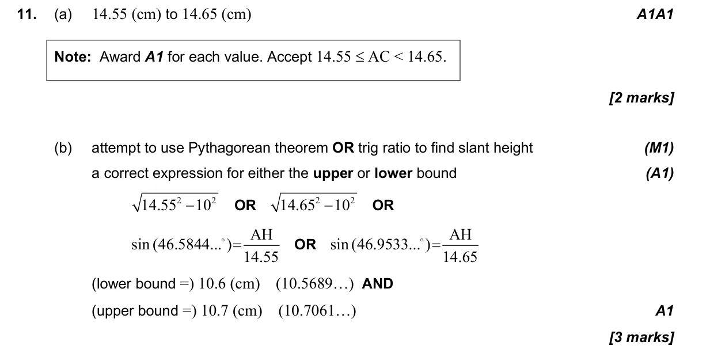
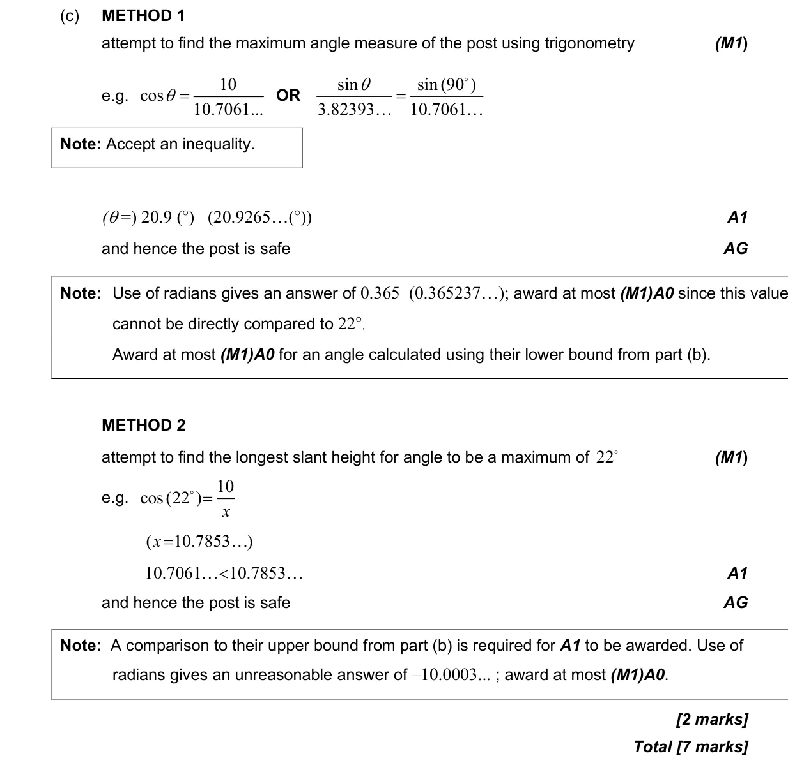

1.6 Approximation, bounds, percentage error and estimation3.1 3D space, volume, angles, distance and midpoints
Question

Markscheme


7 marks - May P1 TZ1 - Mathematics: Applications and Interpretation SL

